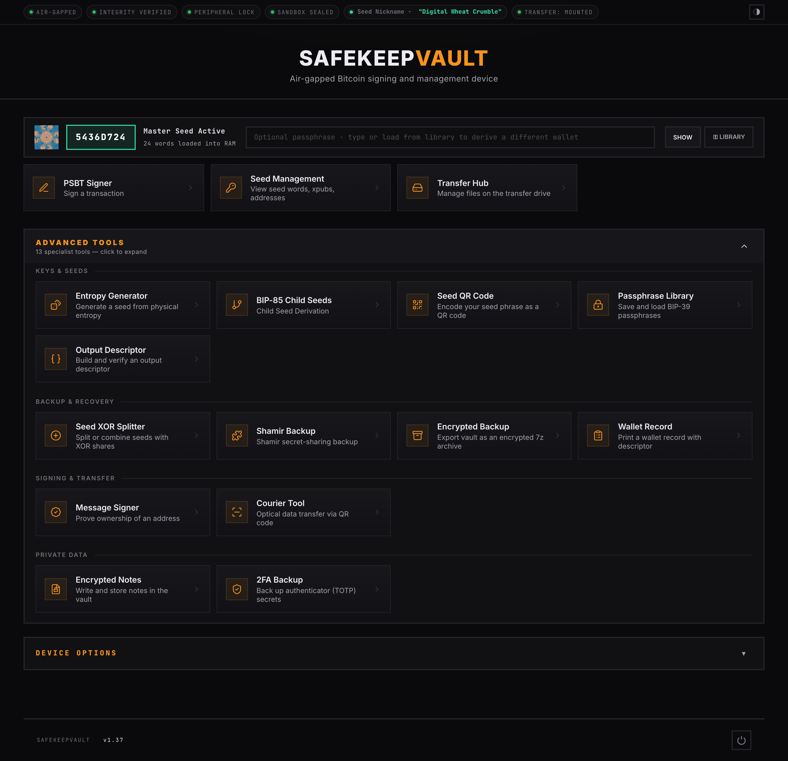
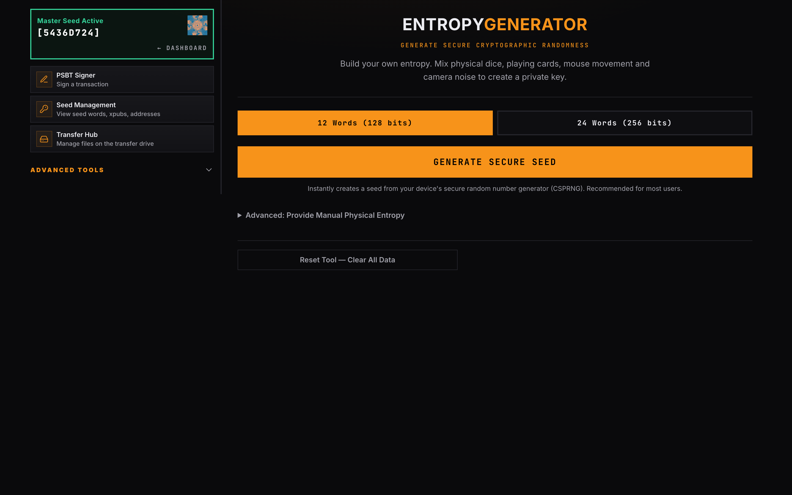
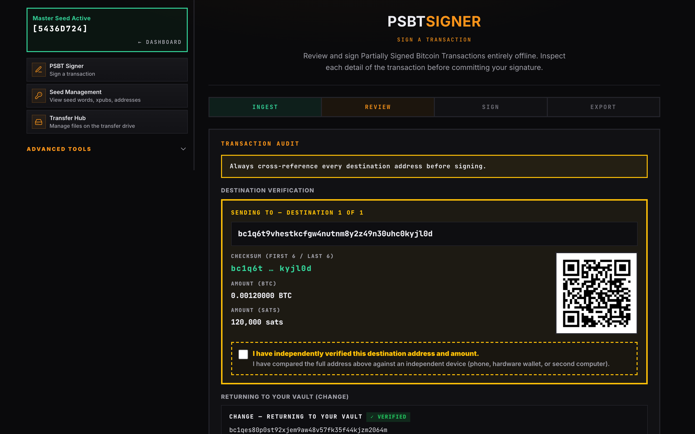
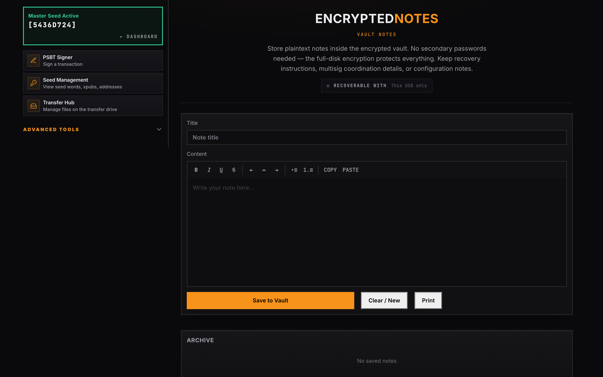

What’s inside the vault
Features
Designed to keep your keys offline · Built for Bitcoin self-custody
Recent releases (up to v1.56)
Updates without reflashing, and a clearer transaction review
v1.56 sets the Output Descriptor form to a saved wallet when you open it, so a saved multisig can be rebuilt. v1.55 makes backups work without an online computer: send one to your phone with the Courier, check that it opens, and restore a new stick from it. v1.54 lets most PCs start the stick with Secure Boot left on. v1.53 lets Nunchuk and Sparrow add your key by scanning the vault’s screen, and plays dense QR codes as animated ones your camera reads easily. v1.52 rebuilt Seed XOR and Shamir Backup: one share at a time, each checked against your paper as you go.
v1.51 protects the vault password: SafeKeep refuses one that is easy to guess, can generate a strong one for you and show it as a QR code for your phone’s password manager, and lets you change it later from Device Options.
v1.50 makes seed generation safer: SafeKeep tests its random number generator before every seed, refuses Verifiable Dice rolls that follow a pattern, and mixes your own randomness in with SHA-256.
v1.49 adds a new boot logo, a shutdown screen you can see, and a clean restart after installing an update.
v1.48 is the first version a v1.47 stick installs in place, from a signed update file. Setting up the vault no longer needs a restart, a typed vault password is asked for twice, and an Encrypted Backup takes a QR-scanned password in one scan.
v1.47 lets SafeKeep update itself: copy a signed update file onto the Transfer Drive and install it from Device Options → Update SafeKeep. The stick keeps two copies of its system, so an update is checked before it takes over and the previous version stays one menu choice away. It needs a flash drive of 8 GB or more, and one last reflash for sticks set up with v1.46 or earlier.
v1.46 lets you save your wallets in the encrypted vault, so the PSBT Signer can say which of your wallets a transaction spends from and confirm that its change comes back to you. The review now shows the total leaving your wallet, the inputs being spent, the lock time and replace-by-fee, and lets you compare each payment address with the one the recipient gave you, character by character. Spending from older 1… addresses shows the fee, a typed passphrase must be typed twice, and a new Auto-Off timer powers SafeKeep down when it’s left idle.
Before that, the Entropy Generator added a Verifiable Dice mode that uses the same method as SeedSigner and COLDCARD, so the same rolls give the same words on either device, plus Playing Cards as an entropy source and a meter that counts only the randomness you add. The Wallet Record now reads everything from your output descriptor and lets you name each key. The Passphrase Library checks your written copy instead of making you re-type, and Standard SeedQR joins Compact.
v1.45 removes every network driver, the terminal and the file manager from SafeKeep OS, adds a network watchdog, and lets the Output Descriptor tool import a wallet from Sparrow, BlueWallet or Bitcoin Core as a watch-only wallet. v1.44 lets the multisig builder read a cosigner’s key straight from a Coldcard or Trezor One plugged into the vault by USB. v1.43 lets the PSBT Signer take an unsigned transaction file sent with The Courier and send the signed file back the same way, for wallets that only work with files, such as Trezor Suite. v1.42 adds a Receive panel to the Output Descriptor tool: it shows a receive address with a QR code, worked out offline from your descriptor so malware on an online computer can’t swap it, and checks an address your watch-only wallet wants to use. v1.41 lets the Output Descriptor tool export a list of your wallet’s addresses (.csv), saves its exports straight to the Transfer Drive, and makes the multisig builder refuse a key entered twice. v1.40 gave the Courier Tool’s transmit controls the same look as the online Courier.
Earlier releases added: a start-up self-check, verifiable and reproducible app releases, LifeHash icons, a dice fairness check, a Bitcoin Core export, co-signing with a Coldcard or Trezor One over USB, a real Lock that clears your keys from memory, and BIP-352 Silent Payments. See all release notes.
Architectural Security
SafeKeepVault boots directly into a hardened, air-gapped environment with all network interfaces disabled and no access to your host machine’s storage. Security isn’t a setting you configure — it’s the starting state.
Absolute Air-Gap — Total Network Isolation
SafeKeepVault has no network, Wi-Fi or Bluetooth drivers at all: they are deleted from the system image when it is built. Your private keys are completely isolated and never have the chance to reach any network interface.
- Start-up Self-Check Before you can enter anything, the vault runs published Bitcoin test vectors (seed words, key derivation, addresses, signatures) through its own code. If this computer gets a single answer wrong, the vault stops instead of risking a wrong key or address.
- No Network Drivers, No Shell Every network, Wi-Fi, Bluetooth, NFC and USB-network driver is removed from the image, along with the terminal, the file manager and the compilers. A watchdog switches off any network interface that appears and shows a red warning. For the strongest air gap, also unplug network cables and turn off Intel AMT/vPro and the radios in the BIOS/UEFI.
- Hardware Lockdown Non-essential peripherals are deactivated. The system communicates only with your display, keyboard, mouse, camera, the flash drive itself, and a Coldcard or Trezor One if you choose to co-sign with one. About 30 seconds after boot, any newly plugged-in keyboard or mouse is blocked, to defend against “BadUSB” devices that pretend to be a keyboard.
Zero-Footprint Operations — Host Integrity
SafeKeepVault operates in complete isolation from your computer's internal storage. Your hard drive is never mounted, read, or modified, ensuring your host OS remains untouched.
- Volatile Memory Execution SafeKeep OS runs from RAM and never mounts your computer’s own drives, so nothing from a session is written to the computer. Keys you load are held only in memory and are cleared when you lock or shut down. The only thing saved is your encrypted vault, on the flash drive itself; a Temporary Session saves nothing at all.
Temporary or Encrypted Versatility — Persistent or Temporary
Choose your workflow for every session. Utilize the Encrypted Vault to securely store keys for recurring use, or run in Temporary Mode for using a different private key or multi-signature setup.
- Streamlined Authentication Access your encrypted storage securely and conveniently. Authenticate by scanning a secure QR code via your mobile device or through traditional password entry.
- True Lock Locking closes the app, clears your keys from memory and closes the encrypted partition, returning to the password prompt. Set an Auto-Lock timer, or leave a Temporary Session and return to your master vault without rebooting.
- No Branded Hardware Transform any standard PC into a signing station without buying a hardware wallet, so there’s no order or shipping record tied to a Bitcoin device. The stick itself isn’t disguised: its boot menu and drive names say SafeKeep, so keep it as private as the hardware wallet it replaces.
The Arsenal
A comprehensive suite of sixteen specialized tools covering the entire Bitcoin lifecycle: generation, backup, sharding, derivation, signing, and inheritance planning. Every utility operates within a strictly air-gapped environment, producing standardized outputs compatible with any industry-standard wallet or coordinator.
- PSBT Signer
- Seed Management
- Transfer Hub
- Entropy Generator
- BIP-85 Child Seeds
- Seed QR Code
- Passphrase Library
- Output Descriptor
- Seed XOR Splitter
- Shamir Backup
- Encrypted Backup
- Wallet Record
- Message Signer
- Courier Tool
- Encrypted Notes
- 2FA Backup





Seamless Ecosystem Integration
SafeKeepVault acts as a secure shield for the wallet software you already use. While your regular wallet tracks your balances, SafeKeepVault keeps your private keys completely offline and out of reach.
To get started, export your public key information from SafeKeepVault and import it into your wallet of choice — like Sparrow, Specter, Electrum, Nunchuk, or Blue Wallet — to create a watch-only wallet. Your watch wallet can track your balance and transaction history in full without ever touching your private keys.
When it’s time to spend, your watch wallet builds the transaction and hands it off as a PSBT file. Move it over to SafeKeepVault by QR code or sneakernet, sign it while fully offline, and send it back to your regular wallet to broadcast. Your keys stay totally disconnected from the internet, exactly where they belong.
Advanced Multisig Coordination
SafeKeepVault is a first-class participant in any multi-signature setup. If you already own a Coldcard, Trezor, or any other signing device, SafeKeepVault works alongside it seamlessly — contributing one key in a 2-of-3 or larger quorum just like any dedicated hardware wallet would. No need to replace what you already have.
A Coldcard or Trezor One can even be plugged straight into the vault. Pair it once in Device Options, and after the vault adds its own signature the PSBT Signer can ask the device for the second one over USB — no files or QR codes passed back and forth. You approve every signature on the hardware wallet’s own screen, and the vault only ever talks to the device you paired.
Setting up the multisig wallet works the same way: in the Output Descriptor tool, Coldcard (USB) and Trezor (USB) read a cosigner’s fingerprint and multisig key straight from the device plugged into the vault, so that key never passes through an online computer. This is especially useful for the Trezor One, which has no SD card or QR code output.
If you prefer an all-in-one approach, SafeKeepVault can also hold and sign with multiple keys itself. Load your primary key from encrypted storage, then temporarily bring in additional keys to meet the required threshold. Those extra keys exist only in volatile memory — the moment you finish or shut down, they are wiped completely and permanently, leaving no trace on the drive.
Native Compatibility
- Blue Wallet Export your public key to Blue Wallet and monitor your balance from your phone. Your signing keys never leave SafeKeepVault — Blue Wallet sees your funds, but can't touch them.
- Nunchuk Nunchuk handles transaction coordination and broadcasting from your phone while SafeKeepVault serves as your offline signing device. Scan the unsigned transaction, sign it on the vault, and send the result back — your keys never touch a networked device.
- Sparrow Wallet Use Sparrow on your desktop to track your balances and organize transactions. When it’s time to sign, Sparrow hands the job off to SafeKeepVault—keeping your keys offline while you move data back and forth using simple files or QR codes.
- Specter Desktop A natural fit for multisig-first setups. SafeKeepVault exports descriptors and PSBTs in the formats Specter expects, making it straightforward to coordinate complex signing arrangements without ever exposing a key to an online machine.
- Electrum Set up Electrum as your watch-only coordinator and use SafeKeepVault as the offline signer. Export your public key, track your balance in Electrum, and sign transactions on the vault when it's time to spend.
- Bitcoin Core Run your own node? The Output Descriptor tool exports a watch-only import file for Bitcoin Core (v0.21 or later). Your node tracks the wallet and can build PSBTs for the vault to sign, with no third-party server involved and no private keys in the export. It can also import a wallet from Sparrow, BlueWallet or Bitcoin Core as a watch-only wallet, to show and check its addresses offline.
Download
Verify the signature against the maintainer's public key before writing the image to a flash drive. The verification guide walks through the procedure end to end.